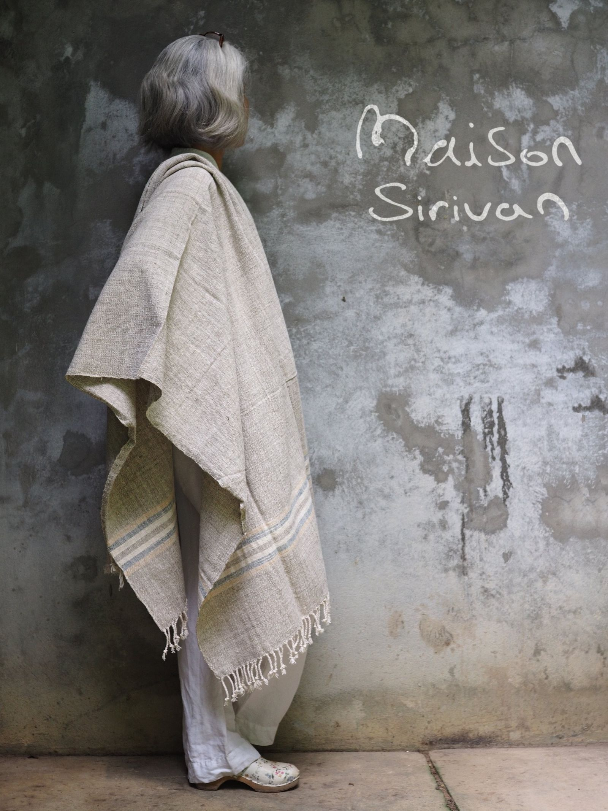
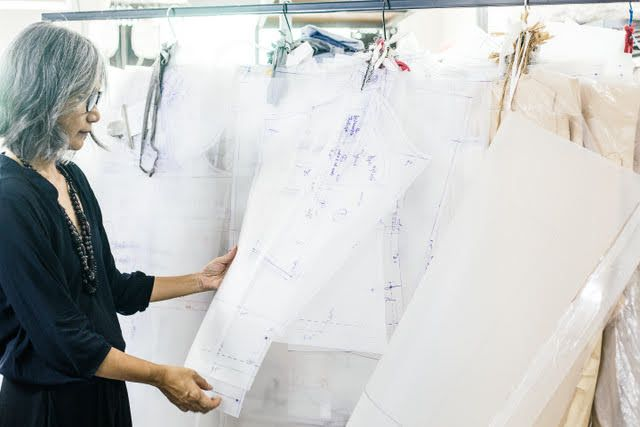

Made here. Sold here.
Clothes designed by Sirivan and made in her own workshop in Siem Reap — in small batches, in every size, in linen and cotton cut for the heat.

From the cutting table to the rail
Behind the boutique is Sirivan Atelier de Couture, our design studio and sewing workshop in Siem Reap. Every piece is drawn, patterned, cut, sewn and finished there. We don't outsource, and we don't buy in and resell.
When you try something on, we can tell you who made it.

In short
- Designed by Sirivan, trained in Paris as a stylist and pattern maker.
- Made in our own workshop in Siem Reap, from the first pattern to the last stitch.
- Small batches — short runs, pieces made to last for years, not seasons.
- Every size — our patterns are graded so that every body can wear them.
Fabrics found once
Most of our clothes are cut from cotton, linen, rayon and blends left over by Cambodia's garment factories: beautiful fabrics, available once and never again. When a roll is finished, the piece is finished. Scarves, hats, bags and some clothes are hand-woven in cotton, silk, and silk and cotton.
Never fast fashion: few pieces, made to be worn for years.
Women, men, home
Easy, well-cut ready-to-wear for women and men, hand-woven scarves and shawls, loungewear, hats and sandals, cushions and table linen — a whole house, not a single product. See the collections.
Sirivan's story
Born in Phnom Penh, raised in the Paris garment district, trained by a master bootmaker in Belleville, Sirivan came home to Cambodia in 2009. Read her story.
Come and try on
Our boutique is in Kandal Village, in the centre of Siem Reap. A selection is also at Atelier 464 in Phnom Penh. Addresses and opening hours.